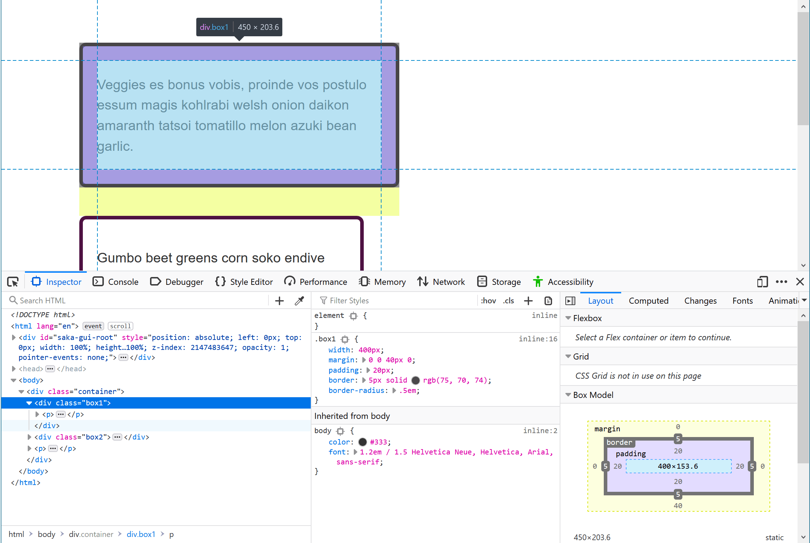

Sometimes when writing CSS you will encounter an issue where your CSS doesn't seem to be doing what you expect. Perhaps you believe that a certain selector should match an element, but nothing happens, or a box is a different size than you expected. This article will give you guidance on how to go about debugging a CSS problem, and show you how the DevTools included in all modern browsers can help you to find out what is going on.
| Prerequisites: | Basic computer literacy, basic software installed, basic knowledge of working with files, HTML basics (study Introduction to HTML), and an idea of how CSS works (study CSS first steps.) |
|---|---|
| Objective: | To learn the basics of what browser DevTools are, and how to do simple inspection and editing of CSS. |
The article What are browser developer tools is an up-to-date guide explaining how to access the tools in various browsers and platforms. While you may choose to mostly develop in a particular browser, and therefore will become most familiar with the tools included in that browser, it is worth knowing how to access them in other browsers. This will help if you are seeing different rendering between multiple browsers.
You will also find that browsers have chosen to focus on different areas when creating their DevTools. For example in Firefox there are some excellent tools for working visually with CSS Layout, allowing you to inspect and edit Grid Layouts, Flexbox, and Shapes. However, all of the different browsers have similar fundamental tools, e.g. for inspecting the properties and values applied to elements on your page, and making changes to them from the editor.
In this lesson we will look at some useful features of the Firefox DevTools for working with CSS. In order to do so I'll be using an example file. Load this up in a new tab if you want to follow along, and open up your DevTools as described in the article linked above.
Something that can trip up newcomers to DevTools is the difference between what you see when you view the source of a webpage, or look at the HTML file you put on the server, and what you can see in the HTML Pane of the DevTools. While it looks roughly similar to what you can see via View Source there are some differences.
In the rendered DOM the browser may have corrected some badly-written HTML for you. If you incorrectly closed an element, for instance opening an <h2> but closing with an </h3>, the browser will figure out what you were meaning to do and the HTML in the DOM will correctly close the open <h2> with an </h2>. The browser will also normalize all of the HTML, and the DOM will also show any changes made by JavaScript.
View Source in comparison, is the HTML source code as stored on the server. The HTML tree in your DevTools shows exactly what the browser is rendering at any given time, so it gives you an insight into what is really going on.
Select an element on your page, either by right/ctrl-clicking on it and selecting Inspect, or selecting it from the HTML tree on the left of the DevTools display. Try selecting the element with the class of box1; this is the first element on the page with a bordered box drawn around it.

If you look at the Rules view to the right of your HTML, you should be able to see the CSS properties and values applied to that element. You will see the rules directly applied to class box1 and also the CSS that is being inherited by the box from its ancestors, in this case to <body>. This is useful if you are seeing some CSS being applied that you didn't expect. Perhaps it is being inherited from a parent element and you need to add a rule to overwrite it in the context of this element.
Also useful is the ability to expand out shorthand properties. In our example the margin shorthand is used.
Click on the little arrow to expand the view, showing the different longhand properties and their values.
You can toggle values in the Rules view on and off, when that panel is active — if you hold your mouse over it checkboxes will appear. Uncheck a rule's checkbox, for example border-radius, and the CSS will stop applying.
You can use this to do an A/B comparison, deciding if something looks better with a rule applied or not, and also to help debug it — for example if a layout is going wrong and you are trying to work out which property is causing the problem.
The following video provides some useful tips on debugging CSS using the Firefox DevTools:
{{EmbedYouTube("O3DAm82vIvU")}}
In addition to turning properties on and off, you can edit their values. Perhaps you want to see if another color looks better, or wish to tweak the size of something? DevTools can save you a lot of time editing a stylesheet and reloading the page.
With box1 selected, click on the swatch (the small colored circle) that shows the color applied to the border. A color picker will open up and you can try out some different colors; these will update in real time on the page. In a similar fashion, you could change the width or style of the border.
You can add properties using the DevTools. Perhaps you have realised that you don't want your box to inherit the <body> element's font size, and want to set its own specific size? You can try this out in DevTools before adding it to your CSS file.
You can click the closing curly brace in the rule to start entering a new declaration into it, at which point you can start typing the new property and DevTools will show you an autocomplete list of matching properties. After selecting font-size, enter the value you want to try. You can also click the + button to add an additional rule with the same selector, and add your new rules there.

Note: There are other useful features in the Rules view too, for example declarations with invalid values are crossed out. You can find out more at Examine and edit CSS.
In previous lessons we have discussed the Box Model, and the fact that we have an alternate box model that changes how the size of elements are calculated based on the size you give them, plus the padding and borders. DevTools can really help you to understand how the size of an element is being calculated.
The Layout view shows you a diagram of the box model on the selected element, along with a description of the properties and values that change how the element is laid out. This includes a description of properties that you may not have explicitly used on the element, but which do have initial values set.
In this panel, one of the detailed properties is the box-sizing property, which controls what box model the element uses.
Compare the two boxes with classes box1 and box2. They both have the same width applied (400px), however box1 is visually wider. You can see in the layout panel that it is using content-box. This is the value that takes the size you give the element and then adds on the padding and border width.
The element with a class of box2 is using border-box, so here the padding and border is subtracted from the size that you have given the element. This means that the space taken up on the page by the box is the exact size that you specified — in our case width: 400px.

Note: Find out more in Examining and Inspecting the Box Model.
Sometimes during development, but in particular when you need to edit the CSS on an existing site, you will find yourself having a hard time getting some CSS to apply. No matter what you do, the element just doesn't seem to take the CSS. What is generally happening here is that a more specific selector is overriding your changes, and here DevTools will really help you out.
In our example file there are two words that have been wrapped in an <em> element. One is displaying as orange and the other hotpink. In the CSS we have applied:
em {
color: hotpink;
font-weight: bold;
}
Above that in the stylesheet however is a rule with a .special selector:
.special {
color: orange;
}
As you will recall from the lesson on cascade and inheritance where we discussed specificity, class selectors are more specific than element selectors, and so this is the value that applies. DevTools can help you find such issues, especially if the information is buried somewhere in a huge stylesheet.
Inspect the <em> with the class of .special and DevTools will show you that orange is the color that applies, and also shows you the color property applied to the em crossed out. You can now see that the class is overriding the element selector.

There is a lot of information about the Firefox DevTools here on MDN. Take a look at the main DevTools section, and for more detail on the things we have briefly covered in this lesson see The How To Guides.
DevTools can be a great help when solving CSS problems, so when you find yourself in a situation where CSS isn't behaving as you expect, how should you go about solving it? The following steps should help.
Any coding problem can be frustrating, especially CSS problems because you often don't get an error message to search for online to help with finding a solution. If you are becoming frustrated, take a step away from the issue for a while — go for a walk, grab a drink, chat to a co-worker, or work on some other thing for a while. Sometimes the solution magically appears when you stop thinking about the problem, and even if not, working on it when feeling refreshed will be much easier.
Browsers expect your CSS and HTML to be correctly written, however browsers are also very forgiving and will try their best to display your webpages even if you have errors in the markup or stylesheet. If you have mistakes in your code the browser needs to make a guess at what you meant, and it might make a different decision to what you had in mind. In addition, two different browsers might cope with the problem in two different ways. A good first step therefore is to run your HTML and CSS through a validator, to pick up and fix any errors.
Browsers ignore CSS they don't understand. If the property or value you are using is not supported by the browser you are testing in then nothing will break, but that CSS won't be applied. DevTools will generally highlight unsupported properties and values in some way. In the screenshot below the browser does not support the subgrid value of {{cssxref("grid-template-columns")}}.

You can also take a look at the Browser compatibility tables at the bottom of each property page on MDN. These show you browser support for that property, often broken down if there is support for some usage of the property and not others. See the compatibility table for the shape-outside property.
This is where the information you have learned about specificity will come in very useful. If you have something more specific overriding what you are trying to do, you can enter into a very frustrating game of trying to work out what. However, as described above, DevTools will show you what CSS is applying and you can work out how to make the new selector specific enough to override it.
If the issue isn't solved by the steps above, then you will need to do some more investigating. The best thing to do at this point is to create something known as a reduced test case. Being able to "reduce an issue" is a really useful skill. It will help you find problems in your own code and that of your colleagues, and will also enable you to report bugs and ask for help more effectively.
A reduced test case is a code example that demonstrates the problem in the simplest possible way, with unrelated surrounding content and styling removed. This will often mean taking the problematic code out of your layout to make a small example which only shows that code or feature.
To create a reduced test case:
In the process of doing this, you may discover what is causing the problem, or at least be able to turn it on and off by removing something specific. It is worth adding some comments to your code as you discover things. If you need to ask for help, they will show the person helping you what you have already tried. This may well give you enough information to be able to search for likely sounding problems and workarounds.
If you are still struggling to fix the problem then having a reduced test case gives you something to ask for help with, by posting to a forum, or showing to a co-worker. You are much more likely to get help if you can show that you have done the work of reducing the problem and identifying exactly where it happens, before asking for help. A more experienced developer might be able to quickly spot the problem and point you in the right direction, and even if not, your reduced test case will enable them to have a quick look and hopefully be able to offer at least some help.
In the instance that your problem is actually a bug in a browser, then a reduced test case can also be used to file a bug report with the relevant browser vendor (e.g. on Mozilla's bugzilla site).
As you become more experienced with CSS, you will find that you get faster at figuring out issues. However even the most experienced of us sometimes find ourselves wondering what on earth is going on. Taking a methodical approach, making a reduced test case, and explaining the issue to someone else will usually result in a fix being found.
{{PreviousMenuNext("Learn/CSS/Building_blocks/Styling_tables", "Learn/CSS/Building_blocks/Organizing", "Learn/CSS/Building_blocks")}}